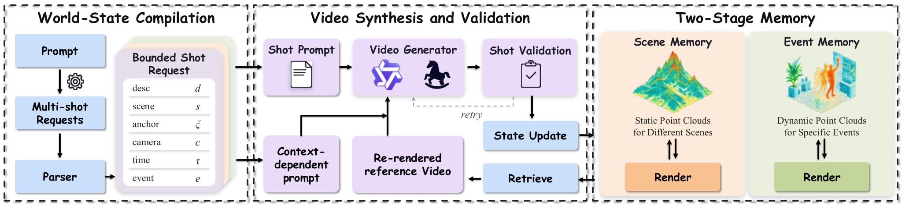
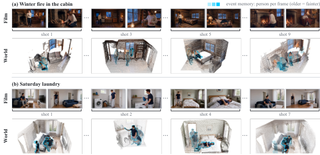
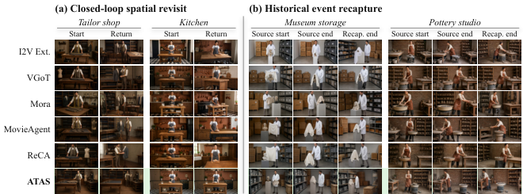
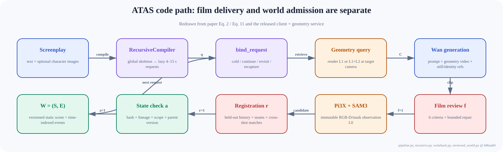
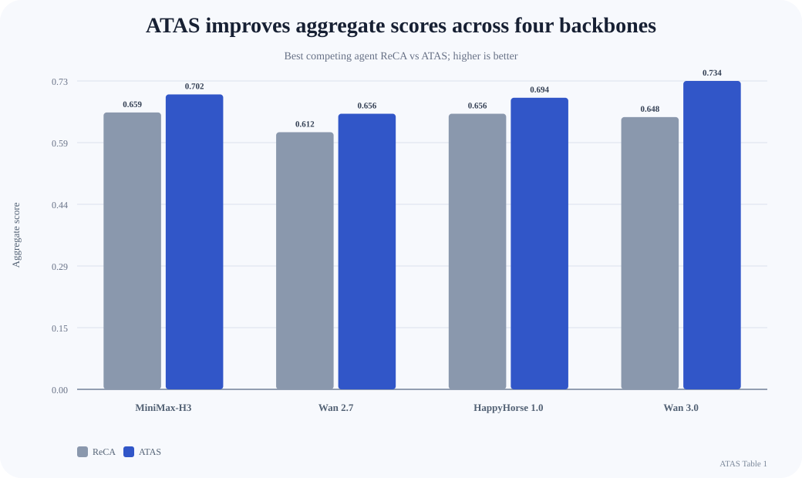
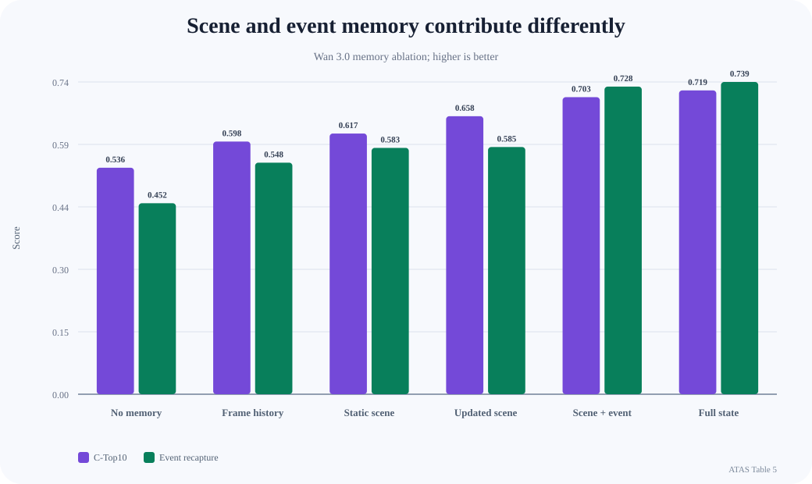
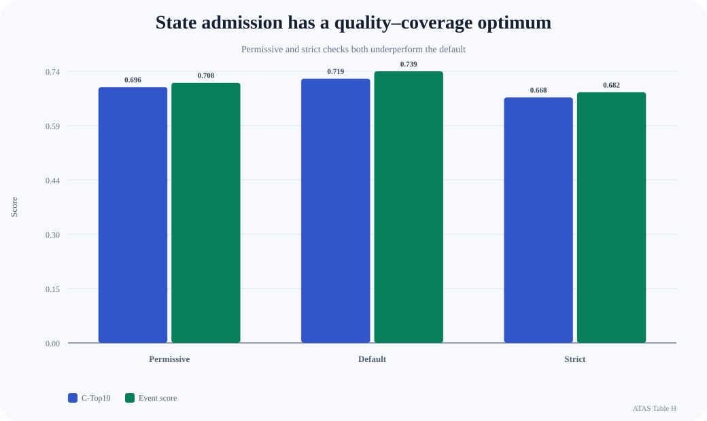

核心结论
关键证据
1. 工作定位：把长视频当成一个持续演化的世界
现有 agent 常传递 prompt、最近帧或参考图；ATAS 认为这些都不是可寻址的世界状态。
论文针对的是非连续请求：故事离开一个房间若干镜头后再回来，布局与物体状态应保持；或者稍后从新机位重拍此前某个事件，动作身份与时间顺序应一致。仅保留 recent frames 无法提供共享空间坐标，也无法按 event/time 找回历史动态。
ATAS 因此把每个镜头写成带 scene、anchor、camera、time interval 和 optional event 的 bounded shot request；生成前查询世界，生成后把 clip 当作不可信候选，再决定它能否成为未来证据。
最重要的概念变化

2. 双层记忆：静态空间与动态事件不能混成一份历史
Scene memory 解决 where，Event memory 解决 what happened when。
L0 observation 保存每个已接纳 clip 的逐帧 RGB、depth、camera、SAM3 动态 mask、instance tracks 与 raw→scene 变换；L1 scene memory 只追加静态点，动态区域、天空和不稳定深度边缘被排除；L2 event memory 保留与 scene、event、source interval 绑定的逐帧动态证据，查询时按源事件时间重新投影。
这种拆分避免把视觉上相似但属于错误发生时刻的帧当成事件证据。普通重访只渲染 L1；recapture 同时渲染 L1+L2，并让静态与动态点共享一个 z-buffer。事件证据并不是身份解析的 4D motion model，而是 frame-local RGB-D/mask 记录。
| 层 | 内容 | 持久性与用途 |
|---|---|---|
| L0 observation | 逐帧 RGB-D、camera、dynamic masks、tracks、provenance | immutable；scene/event memory 的来源 |
| L1 scene memory S | 同一 scene frame 下的静态 point cloud | append-only、versioned；任意新机位重渲染 |
| L2 event memory E | 按 scene/event/time 索引的动态观测 | 不融合进 L1；历史事件按源时间重投影 |
论文中的长期 rollout 与两类查询
左图展示影片帧与注册后的 world view 如何随镜头积累；右图展示空间重访和历史事件换机位重拍。


3. 代码总链路：client 编排，GPU geometry service 管世界
公开实现不是一个单体脚本，而是两个进程域加外部生成服务。
Client 负责 screenplay compiler、请求绑定、相机/提示词编写、Wan 调用、VLM review、持久 ledger 和最终剪辑；geometry service 负责 Pi3X/SAM3 reconstruction、anchored registration、memory render、candidate publication 与 GPU 调度。二者通过 /v1/jobs、/v1/camera-context、/v1/world-publication 和 /v1/world-rebase 交互。
StoryRunner._execute() 与论文 Eq. 2 高度一致：先从已接纳的 world ledger 查询条件，再生成、review、重建、注册和发布。代码将 f/r/a 三个结果单独记录在每个 shot row 中。
| 论文概念 | 主要代码 | 实际行为 |
|---|---|---|
| Compile(q) | compiler/recursive.py + request.py | 全局 skeleton；执行到某 shot 时才结合当前 world snapshot 展开 4–15 秒 segments |
| Query(C) | runner/pipeline.py + camera_planner.py + geometry_client.py | 只查询已 admission 的 scene/event；输出目标相机下的 geometry video |
| Generate(V) | providers/wan/generation.py + router.py | 将 geometry video、opening still、character refs 与 authored prompt 打包给 Wan |
| Film review f | review/film_review.py + repair.py | 六项 VLM 审核；有限次重生成；最优候选可交付但不自动成为可信状态 |
| Registration r | reconstruct/* + register/anchored_fusion.py | Pi3X/SAM3 L0；历史条件重建、held-out/seam/SIFT 检验、append-only 静态融合 |
| State check a | world/reviewed_world.py + world_state.py | 精确内容哈希、review lineage、scene scope、parent version 后原子发布 |
| Resume | recon_ledger.py + Wan journal + story.lock | 远端任务、provider task 和本地 receipt 可恢复，避免重复付费生成 |

recursive.py、pipeline.py、anchored_fusion.py、writeback.py 与 reviewed_world.py 重绘的代码路径；film delivery 与 world admission 是两条不同结果。 · source4. World-state compiler：不是一次性把剧本切完
它先规划故事骨架，再在执行到每个 narrative shot 时结合最新世界状态懒展开。
RecursiveCompiler 的 Level 1 先得到 cast、physical scenes、narrative shots、start/end state 和 transitions；Level 2 在执行到某 shot 时，把 current WorldLedger.snapshot() 放进 LLM 上下文，拆成 generator 可承受的 4–15 秒 bounded requests。请求结构对应论文 q=(d,s,ξ,c,τ,e)。
编译器有强 JSON validation：角色、地点、duration、camera move、shot size、recapture source 与 interval 都被校验；输出无效时最多四轮 schema recovery。已经执行过的 segment expansion 被缓存并冻结，resume 不会偷偷重写历史计划。
Recapture 有一个重要实现边界：event memory 每个生成 clip 保存一条 record，因此 recapture interval 必须落在一个 source segment 内；若跨界，代码会把时间窗平移或缩短到重叠最多的 segment，而不会跨多个记录拼接完整动作。
设计收益
5. Query 与 generation：几何是条件视频，不是最终渲染
显式世界先提供 target-camera scaffold，再由视频生成器将灰洞和稀疏点渲染成成片。
Camera planner 先从历史 observation 选 frame，用 VLM 在真实可见像素上给 1–4 个 focal/context box 与 seed；geometry service 利用局部 depth 将其提升到 3D，按 shot size、screen position 与 camera move 求轨迹，并做 clearance/framing 检验。Coverage 只是排序/诊断信号，不会把用户要求的运镜偷偷改成更保守轨迹。
普通 revisit 渲染 L1，recapture 渲染 L1+L2；超大点云根据空闲显存流式 z-buffer。未知像素保持灰色，随后 geometry video 作为 Wan 的 @视频1 条件，opening/continuity still 和角色图承担身份、服装与初始状态。
公开生产路径实际面向 Alibaba DashScope Wan 3.0：prime/video 两条 lane，容量不足时路由切换，并持久记录 provider task、模型、media digest 与输出。接口类型是 provider-neutral，但代码树没有 MiniMax-H3 或 HappyHorse 适配器。
- 若事件 record 缺失，recapture 会降级为 scene revisit 或 cold start，并显式记录
event_memory_unavailable。 - 若 geometry render/camera planning 不可用，系统仍可无几何生成影片，但该 shot 标为 degraded/film-only，不写入世界。
- 连续镜头即使没有可用 geometry，也可从已交付上一镜尾帧维持局部帧连续性；这不是 world-state admission。
6. f / r / a 三道门：为什么错误不会轻易污染后续镜头
影片是否可看、几何是否对齐、候选是否可提交是三个独立判断。
Film review f 用七帧采样和 VLM 检查 subject、framing、motion、action、event、world_consistency 六项；critical failure 才触发 bounded repair，uncertain/warning 可作为影片继续。预算耗尽时会比较所有候选并交付 best available，但它仍保持 f=false，不会进入重建/状态。
Registration r 先以最多六个历史帧条件 Pi3X：约四个带 depth/pose/intrinsics，另一些只给 RGB 作为 held-out；每个 chunk 拟合 residual Sim(3)，再检查 held-out error、chunk seam、pinhole residual 和独立 old/new SIFT correspondences。跨 shot 检验要求至少 30 个 correspondence、来自至少两个 frame pair，并且禁止用二次 refit 把错误世界位姿“对齐掉”。
通过 registration 后只产生 candidate world。State check a 再核对 review 的视频 SHA-256 是否等于重建字节、review/recon lineage 是否一致、candidate 是否属于目标 scene、parent version 是否仍 current。并发冲突会触发 rebase，而非覆盖。
- 新静态点必须不是旧点附近重复、不能落在至少两个历史视角确认的 free space，并在三个时间段中至少两个得到支持。
- 旧 L1 geometry 和颜色保持 byte-for-byte，不做平均或 warp；新世界是 append-only version。
- 这增强审计性，但也意味着被错误接纳的旧几何不会靠后续全局 bundle adjustment 自动修正。
7. 论文结果：跨 backbone 增益更像系统收益，而非单一生成器红利
同一个 agent 结构在四个生成 backbone block 中都提高 aggregate score。
ATAS 在 MiniMax-H3、HappyHorse 1.0、Wan 3.0 的四项 aggregate 均领先；Wan 2.7 上 VBench 略低于 ReCA（0.846 vs 0.854），但 ST-Bench 和两项 ViStory 更高，最终 aggregate 仍为 0.656 vs 0.612。说明 persistent state 主要改善跨镜一致性，而不会保证每个 backbone 的局部美学分数都上升。
空间重访达到 15.968 PSNR_C / 0.385 SSIM_C / 0.284 LPIPS_C。事件重拍领先 event identity、temporal order、view realization，character/object 与 ReCA 持平；action/state 为 0.688，略低于 ReCA 的 0.700，显示检索到“同一事件”不等于精确复现每个动作状态。
评价协议边界

8. 消融解释：Scene 与 Event memory 的收益是可分的
静态场景主要改善空间恢复，事件记录主要改善历史动作重拍。
从 no memory 到 static scene，LPIPS_C 由 0.341 降到 0.289；updated scene 主要继续提高 C-Top10，而 event memory 将 recapture score 从 0.585 大幅推到 0.728。Full state 的最终增益较小，说明 validation 主要保护已有检索能力，而不是增加新的内容来源。
State admission 也不是越宽松越好：90% permissive admission 会把低质量观测写入世界，36% strict 又导致未来证据不足；默认 67.4% update rate 在本实验中取得最好 C-Top10、LPIPS_C 与 event score。
Memory 组成与 admission 阈值
左：Table 5 的记忆增量；右：Table H 的 state-check coverage/quality 取舍。


9. 工程质量：重任务恢复与不可变 receipt 是亮点
ATAS 对“花钱生成到一半进程挂了”这一类真实系统问题处理得很认真。
CLI 用 story.lock 防止同一故事并发执行；compiler plan、provider route、film repair、geometry job、recon result 和 world publication 都落为 JSON receipt，并通过临时文件 + fsync + os.replace 原子替换。重复相同 geometry request 会命中 fingerprint job；polling 不确定时保留 job_id，避免重新提交。
每个 publication 将 candidate、review、source hash、parent version 和 immutable commit manifest 绑定；旧 world pointer 直到新版本完整写好才切换。测试覆盖 resume、stale parent、crash-before-pointer、unadmitted event source retake、best-available delivery 与 memory fallback 等契约。
| 项目 | 观察 |
|---|---|
| First-party Python | 163 个 .py；另有 178 个 vendored backbone .py |
| Tests | client 21 个测试模块；geometry 37 个测试模块 |
| 本次静态验证 | 69 个关键文件按 GitHub tree size 校验；核心 client/geometry compileall 通过；CLI help 可运行 |
| 本次局部 pytest | 抽取源码不完整时 20 tests 通过，12 tests 因未拉取的辅助模块无法收集；不能据此宣称全仓测试通过 |
10. 复现路径与公开仓库的真实边界
README 的 quick start 可以跑 production Wan path，但不足以一键复现论文全部表格。
Client 需要 Python 3.12、ffmpeg、DashScope API key，以及 OpenAI-compatible Responses/Image gateway；默认配置指向 Wan 3.0、GPT-5.1 和 gpt-image-2。Geometry service 需要 NVIDIA GPU（README 约 20 GB free memory）、Pi3X 权重和 SAM3 checkpoint，默认本地端口 18300。
安装后用 atas run --screenplay ... --characters ... --story-id ... 执行；--plan-only 仍需要 LLM 做 compiler，--memory none 是公开 CLI 唯一完整 memory ablation 开关。结果目录含 final.mp4、per-shot manifest/receipts 和 report。
| 论文声明/实验 | 公开代码状态 | 影响 |
|---|---|---|
| 四个 video backbones | Production adapter 只公开 Wan/DashScope 路径；未见 MiniMax-H3、HappyHorse adapter | Table 1 不能仅用当前 CLI 完整复现 |
| 六种 memory setting / component ablation | CLI 只暴露 full / none；细粒度实验开关与 runner 未公开 | Table 4/5 需要额外实验配置 |
| VBench / ST-Bench / ViStory / human study | 仓库无 first-party evaluation/benchmark scripts 与 benchmark inputs | 指标复现需论文作者环境或自行重建 harness |
| 三份 examples | bookstore / clockshop / record 与 character images 已提供 | 可做功能 smoke test，但不是论文 benchmark |
| Model training | 没有 ATAS 训练；Pi3X/SAM3 是外部权重，video/LLM/image 均走外部服务 | 这是系统集成型工作，不是可离线训练的单模型发布 |
11. 我的技术判断
ATAS 最有价值的不是“记忆”这个词，而是把生成内容降级为必须通过审计的 observation。
很多长视频系统直接把上一轮输出当成下一轮事实，错误会复利。ATAS 的 f/r/a 设计把“能剪进影片”与“能成为未来世界事实”分开，再配合 exact hash、lineage、optimistic versioning 和 append-only geometry，形成一个相当清晰的 trust boundary。这是论文与代码最一致、也最可迁移的贡献。
另一方面，它并没有解决真正的通用 4D world model：scene frame 由第一条观测定义且不是 metric，动态记录是 clip-local，身份不是跨 clip 的几何实体，旧静态点不会全局优化，unknown region 仍交给生成器 hallucinate。它更准确地说是“可审计的显式证据库 + agentic renderer”，而不是物理一致的长期模拟器。
- 优势：状态可寻址、可审计、可恢复，且生成器可替换。
- 风险：第一观测误差、点云长期增长、无 loop closure、clip-bound event、外部 API 漂移。
- 最值得后续研究：跨 segment event composition、可撤销/修正的 world revision、身份解析 4D tracks、让几何验收反馈到 generator，而不仅是准入 gate。
局限与开放问题
- 论文于 2026-10-14 发布，结论基于 arXiv v1 与审计时 main commit；代码和模型服务可能快速变化。
- 本次没有配置 DashScope/OpenAI API、Pi3X/SAM3 weights 与 20GB GPU，因此未运行付费的完整 end-to-end generation。
- GitHub 完整仓库含大量第三方 backbone 快照；本次通过 tree API 校验并审计 69 个核心 first-party 文件，第三方模型内部不作为 ATAS 创新展开。
- 自动 event evaluator 没有同步 target video，与人工评分只有中等相关；精确动作/物理一致性仍是短板。
- 运行时间与存储随世界增长；论文短 rollout 的 memory profile 不能外推为长期 scaling law。
证据与推断边界
- 论文事实：世界状态定义、双层记忆、f/r/a 决策、benchmark/ablation 数值和效率数据。
- 代码确认：lazy compiler、only-admitted-memory binding、Wan reference packing、Pi3X/SAM3 reconstruction、anchored registration、append-only fusion、hash/lineage/version publication。
- 分析推断：ATAS 的主要可迁移贡献是 trust boundary 和 evidence lifecycle，而不是新的生成模型。
- 无法确认：未公开的四-backbone experiment harness、完整 benchmark 配置和 proprietary provider adapter 是否与论文内部版本完全一致。
来源与版本
论文图来自 arXiv HTML；系统图与结果图均标明 paper/code source。代码分析锁定 GitHub main commit b86aab046368a399cdbbf761e633073ff3823b9f。
- ATAS Paper PDF — arXiv v1, 2026-10-14
- ATAS Method — compiler、memory、generation、state update
- ATAS Experiments — main results、ablation、efficiency
- ATAS GitHub — audited main commit b86aab046368a399cdbbf761e633073ff3823b9f
- StoryRunner pipeline — Eq. 2 / Eq. 11 execution loop
- RecursiveCompiler — skeleton + lazy bounded requests
- WorldLedger — accepted scene/event references
- Anchored fusion — history-conditioned reconstruction and validation
- Reviewed world publication — content-bound state admission
- Design notes — L0/L1/L2、registration、rendering、versions